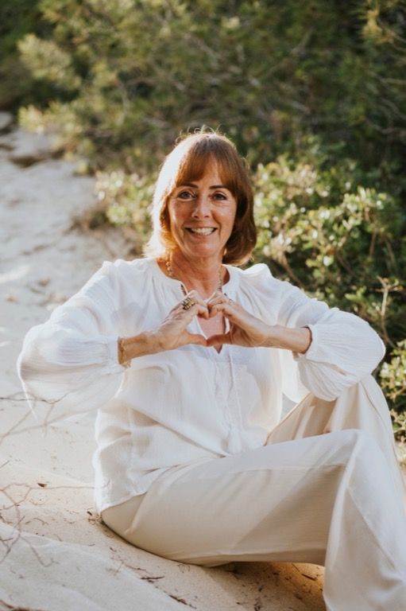

Astroloog, therapeut en gids voor iedereen die meer wil begrijpen van zichzelf, hun relaties en hun weg in het leven.

Mijn verhaal
Meer dan vijfentwintig jaar geleden begon mijn reis in de alternatieve geneeskunde. Ik zocht naar manieren om mensen te helpen die verder gingen dan symptoombestrijding — aandacht voor de hele mens, zijn verhaal, zijn patroon en zijn potentieel.
Gedurende al die jaren werken met cliënten groeide mijn overtuiging: mensen willen begrepen worden. Ze willen begrijpen waarom ze zijn wie ze zijn, en hoe ze meer van zichzelf kunnen worden. Astrologie bleek een verrassend krachtig instrument daarvoor.
Vijf jaar geleden begon ik mijn opleiding tot gediplomeerd astroloog. Niet als vervanging van mijn therapeutische achtergrond — maar als verdieping ervan. Astrologie geeft taal aan wat soms moeilijk onder woorden te brengen is. Het helpt patronen te herkennen, keuzes te verhelderen en zichzelf met meer compassie te bekijken.
Ik werk vanuit Loosdrecht, vlakbij Hilversum, en ook online via Zoom. Mijn cliënten zijn mensen die nadenken over hun relaties, hun loopbaan, hun geluk — en die daarin een spiegel willen.
Mijn filosofie
Ik werk niet met voorspellingen. Ik werk met inzicht. De horoscoop beschrijft wie jij kunt zijn — aan jou de keuze hoe je daarmee omgaat.
Elk gesprek heeft een ingang: jouw vraag, jouw situatie, jouw moment. De horoscoop geeft kleur en richting. Samen werken we naar concrete inzichten die jij morgen kunt gebruiken.
Een sessie vraagt openheid. Ik zorg voor een omgeving waarin je jezelf kunt zijn — zonder oordeel, zonder druk. Mijn therapeutische achtergrond maakt het verschil in hoe ik luister.
Ik gebruik klassieke astrologische kennis — maar vertaal die naar de wereld van nu. Hoe leef jij goed met wie je bent, in jouw relaties, jouw werk en jouw leven vandaag?
Achtergrond & opleiding
Een combinatie van jarenlange praktijkervaring in de alternatieve geneeskunde en een gedegen academische astrologieopleiding maakt mijn aanpak uniek.
Meerjarige beroepsopleiding astrologie, afgerond met diploma en erkend lid van de Astrologische Vakvereniging Nederland (AVN).
Opbouw van een praktijk met focus op holistische begeleiding. Werken met mensen in uiteenlopende levensfasen en vraagstukken.
Meer dan een decennium aan opleidingen en cursussen op het gebied van alternatieve geneeskunde, therapie en persoonlijke ontwikkeling.
Actief deelnemer aan lezingen, seminars en studiedagen van de AVN en andere astrologische platforms.
Kwalificaties
Beata van Etten is gediplomeerd astroloog en erkend lid van de Astrologische Vakvereniging Nederland (AVN), ASAS en Aquarius. Kwaliteit en beroepsethiek zijn gewaarborgd.
Mijn jarenlange werkervaring met mensen in diverse situaties geeft mijn astrologische sessies een diepere laag van menselijk begrip.
Een brede basis in holistische gezondheidszorg en persoonlijke begeleiding, opgebouwd over tientallen jaren.
Praktijk aan huis in een rustige omgeving. Sessies ook online via Zoom voor cliënten door heel Nederland en België.